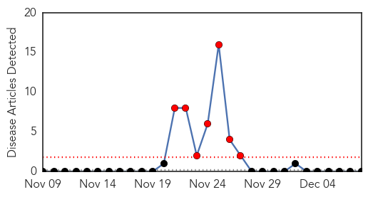
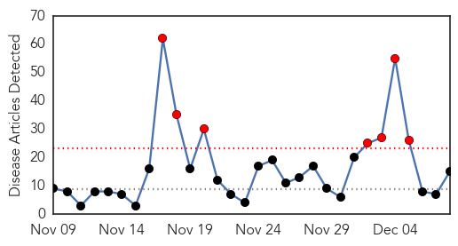
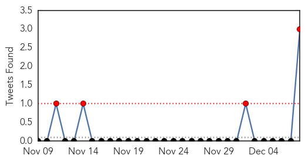
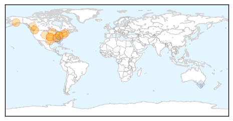
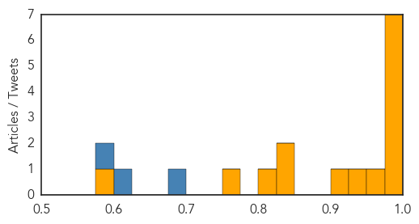

Bubonic Plague
30-Day Web Trend
7 alerts, 0 warnings

30-Day Twitter Trend
1 alerts, 0 warnings

Article Locations

Article Confidences

Top Articles:
-
No articles found for Dec 08, 2014
Top Tweets:
-
No tweets found for Dec 08, 2014
Influenza
30-Day Web Trend
7 alerts, 0 warnings

30-Day Twitter Trend
2 alerts, 0 warnings

Article Locations
Article Confidences
Top Articles:
- 0.999
- Local health officials express concern that flu season might be more severe this year
- 0.999
- Flu has arrived in Estes Park
- 0.999
- Ohio: Flu hospitalizations in 2014 more than double same period last year
- 0.999
- National Influenza Vaccination Week - IronMountainDailyNews.com
- 0.996
- Health department urges flu vaccination
- 0.994
- Health Department Recognizes National Influenza Week, Offers Flu Vaccinations
- 0.981
- Does Flu Vaccine Reduce Kids' ED Visits?
- 0.968
- Flu for the holidays? There's still time to get vaccinated
- 0.946
- Childhood influenza burdens healthcare despite reported increases in vaccination
- 0.914
- Flu clinic offers chance to beat the bug
- 0.850
- Canada Continues Avian Flu Investigation
- 0.847
- Weekly Overview: Disease Control in Farm Animals is Cheaper Than a Pandemic
- 0.811
- Spike In Serious Flu Cases In Larimer County Indicates Statewide Trend « CBS Denver
- 0.766
- Avian flu outbreak prompts restrictions on domestic bird movement
- 0.599
- 140,000 B.C. chickens and turkeys lost to avian flu outbreak
Top Tweets:
- 0.855
- Flu Shots: Influenza A (H3N2) virus drift affecting vaccination effectiveness | Outbreak News Today http://t.co/HDUL0XDsno
- 0.690
- It's Nat'l Influenza Vax Week! Have you gotten a flu vax yet? While viruses are spreading, it's not too late to getafluvax NIVW2014
- 0.581
- RT: It's Nat'l Influenza Vax Week! Have you gotten a flu vax yet? While viruses are spreading, it's not too late to getafluvax NI…